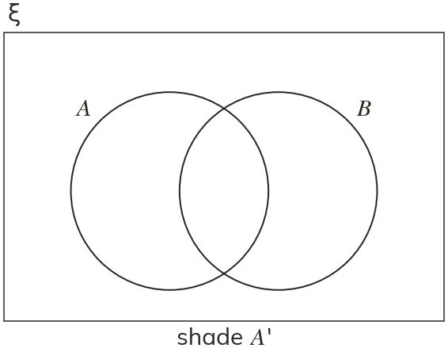
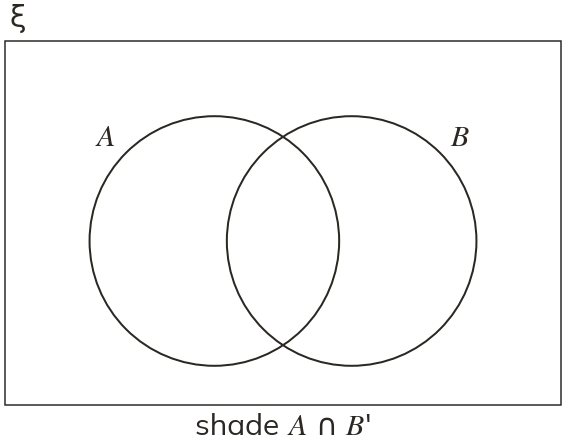

Westonbirt Maths · Probability, Sets and Two-Way Tables
Set Notation and Venn Diagrams
Name: ______________________ Date: ____________
1
ξ …, and List the elements in each of the four regions of the Venn diagram.
2
Using question Ned puts only and on his Venn diagram. What is his mistake?
3
Shade A'.

4
Shade ∩

5
Which set does the shaded region show?
Ext
ξ …, , and
a) Which element is in all three sets?
b) Which elements are in none?
a) Which element is in all three sets?
b) Which elements are in none?